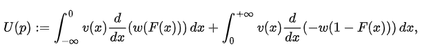
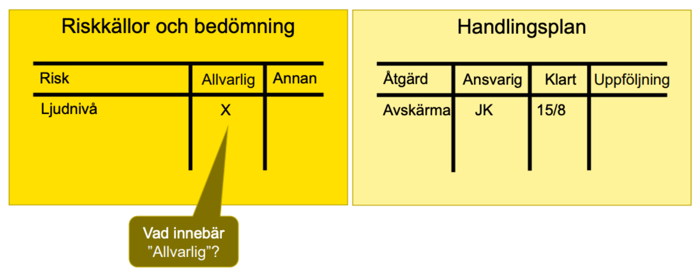

Lektion 4 - SAM och riskbedömningar
Repetition
Lektion 3 handlade om …
Riskförståelse
PDCA

Permit to Work System
Beräkna risk

Lektion 4 - SAM och riskbedömningar
Mål
- Kunna utföra enkla riskbedömningar
- Förklara skyddsombuds uppgift
Gruppövning
Fem minuter: Diskutera eventuella erfarenheter av:
- Skyddsombud
- Skyddskommitté
Förankring i författning
- Arbetsmiljölagen 6. Kap. §1-18
- Skyddsombud och skyddskommitté
- Fartygssäkerhetslagen 4. Kap. §10-17
- Skyddsombud och skyddskommitté
Skyddsombud och skyddskommitté
Skyddsombud krävs när….
Skyddsombudet får avbryta ett arbete om…
Skyddskommitté krävs när…
Skyddsombudets skydd till anställning enligt §15 behövs för att…
Vad ska skyddsombud/skyddskommitté göra?
Besättningen är fem eller fler eller om det behövs (§11)
Det utgör omedelbar och allvarlig fara för någon ombordvarandes
liv eller hälsa och rättelse inte genast kan uppnås… (§12)
Besättningen är 12 eller fler eller om det begärs av de
ombordanställda (§14)
Hittar vi både i AML och FSL!
PDCA
SAM - I författning
- Arbetsmiljölagen 3. kap. §2a
- “Arbetsgivaren ska systematiskt planera, leda och kontrollera…”
- TSFS 2019:56 2 kap. §1
- “…gäller Arbetsmiljöverketsföreskrifter (AFS 2001:1)…”
- ISM-Koden (EG 336/2006, bilaga 1)
Gruppuppgift
Utifrån §5-11 i AFS 2023:1, vilka motsvarigheter eller likheter hittar ni i ISM-koden (EG 336/2006, bilaga 1)?
AFS 2023:1 och ISM-koden
| Område | AFS 2001:1 | ISM-koden |
|---|---|---|
| Policy | §5: Arbetsmiljöpolicy | 2: HSE Policy |
| Träning och utbildning i arbetsmiljö | §6: ”Arbetsgivaren skall också se till att de har tillräckliga kunskaper…” (även FSL 2 kap, §6) |
6.4: ”… personnel involved… adequate understanding of rules…” |
| Ansvar och arbetsfördelning | §6: ”Arbetsgivaren skall fördela uppgifterna…” | 3.2: ”The company should define and document the responsibility…” |
| Skriftliga instruktioner | §7: ”När riskerna i arbetet är allvarliga skall det finnas skriftliga instruktioner” | 7: ”… company should establish procedures, plans and checklists…” |
| Riskbedömning | §8: ”Arbetsgivaren skall regelbundet undersöka arbetsförhållandena och bedöma riskerna…” | 1.2.2: ”… assess all risks to its ships, personnel and environment…” |
| Incidenter och olyckor | §9: ”… ska arbetsgivaren utreda orsakerna…” §10: ”… vidta åtgärder” |
9: ”Reports and analysis of non-conformities, accidents and hazardous occurrences” |
| Uppföljning | §11: ”Arbetsgivaren ska varje år göra en uppföljning av det systematiska arbetsmiljöarbetet” | 12.1: ”carry out internal safety audits… twelve months” |
| Företagshälsovård | §12: ”När egna kompetensen inte räcker… anlita företagshälsovård” |
AFS 2023:1 och ISM-koden
Riskbedömning
Riskbedömning är att bedöma de risker som har identifierats i verksamheten för att avgöra om riskerna är allvarliga eller inte. Att bedöma risker är en del av det systematiska arbetsmiljöarbetet. Arbetsmiljöverket, 2025
Riskbedömning – begrepp ur ISGOTT
Riskbedömning

Riskbedömning - kvantifiering

Gruppuppgift
Ni skall utföra ett kranlyft vid proviantering ombord. Riskbedöm genom att:
- Bryta ner arbetsprocessen i steg (ta fram sling och utrustning, starta kran osv.) - max fem steg!
- Identifiera farorna i varje steg
- Kvantifiera riskerna
- Identifiera åtgärd för att reducera riskerna
- Bedöm kvarvarande risk
Riskbedömning
- Bäst gjord i grupp där olika perspektiv och erfarenheter får komma till tals…
- Stöd från rutiner, erfarenheter
- Reka platsen!!
- Kritiskt tänkande
Avslut för dagen
- Skyddsombud?
- Riskbedöming?